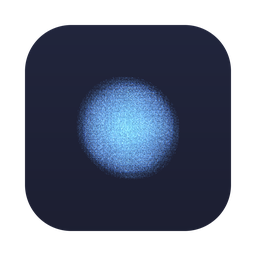
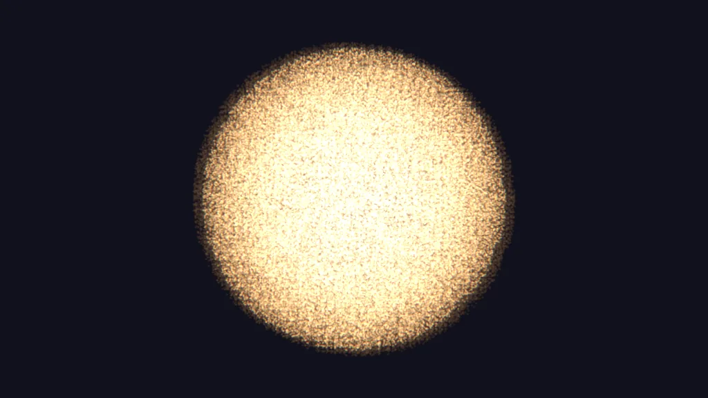
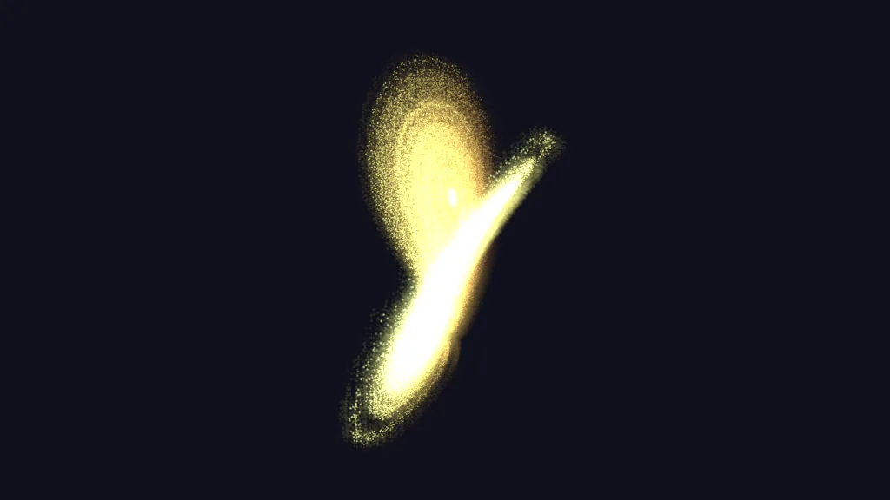
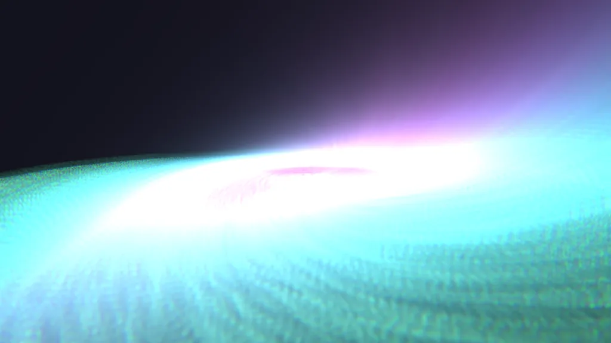
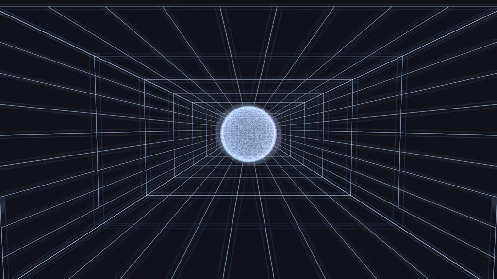
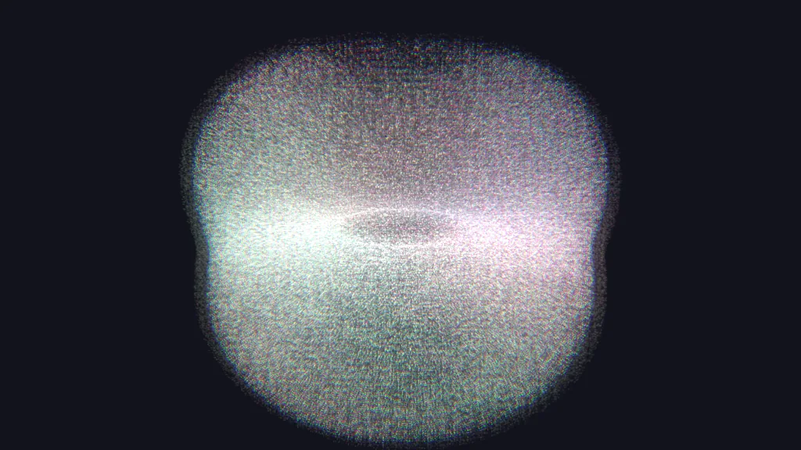
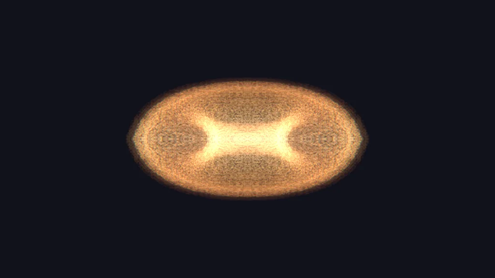

vizzRealtime generative visuals for VJing. Native Rust and wgpu, feeding Resolume, TouchDesigner and MadMapper over Syphon and NDI, played live over OSC and MIDI.
Apple Silicon and Intel. signed & notarized
— it opens with a normal double-click, checked with spctl in CI
before every release. Windows builds from source and is tested in CI;
there is no Windows installer yet.
Or one line in a terminal, which puts it in Applications:
curl -fsSL https://raw.githubusercontent.com/legofsalmon/vizz/main/scripts/install.sh | bashSyphon is embedded in the bundle — nothing else to install. Double-clicking runs 1280×720 with OSC on udp/7000 and Syphon on.
Built to survive a live set: the render thread never waits on anything.
Syphon on macOS, zero-copy on the same Metal queue. NDI on the network, with frames dropped rather than awaited — losing an NDI frame is survivable, missing vsync is not.
OSC and MIDI on every parameter. Sixteen assignable faders on the performance layout, each with MIDI learn and a ghost mark showing where modulation has actually pushed it.
Design a look, save it as a preset, put it on one of sixteen pads, and fire it mid-set — the blend takes musical time and moves the parameters, not a crossfade. Edit a preset once and every pad playing it follows.
Four attractors and repulsors bend the cloud from a layer over the scenes, with their own presets and their own sixteen-pad grid. Looks and wells compose instead of overwriting each other.
LFOs, a beat clock, and four configurable audio bands with tempo detection, wired on a pannable canvas. Modulation is an offset on top of your value, so a fader you set stays where you set it.
Eight morphing modes including two strange attractors. Drop a PLY, XYZ, PTS or CSV onto the window to load a scan, colour included. A real camera with depth of field, and a wireframe room sized to the frame for forced perspective.
Stream PLY in over TCP, or watch a file that gets rewritten. Frames morph against loaded scans and attractors like any other cloud. No wrapper protocol — a PLY header is its own frame length.
Every external dependency fails soft. Health monitoring with frame-time percentiles, and a headless mode that renders the same frame path as a live set for benchmarking.
Six built in, on the number keys. Every one of these is a real frame, rendered headlessly from the preset itself.






Newest first. Full notes on each release page.
/vec/place switches the stack
between living inside the feedback chain and printing clean
over the top.vizz-design crate — one meaning, one colour,
everywhere, enforced by a test that fails if a screen restates
a state colour by hand./video/depth sets how far the
relief pushes and /video/relief chooses what
drives it.--fullscreen starts venues that way. New
/record/active captures the master as a PNG
sequence that never stalls the show — drops are counted on the
red REC chip, and a full disk stops the take with one notice.XDG_CONFIG_HOME like everything else,
re-dropping an edited palette reloads it in place, and quitting
flushes the newest MIDI binding.--width
precedence, a title bar that only claims what bound, and quit
without the two-second stall..gpl or a list of hex colours. Both come back on the
next launch.midi.json files load
unchanged.fit sets
every band from what is actually arriving.mod would not turn off. Each
press added another route on top of the last, so the modulation only
ever got deeper. It is a toggle now.? shortcut list now opens with the panel hidden and
from the performance layout — the two places you would ask for it./, modulated ones
marked, stepped ones named rather than numbered.fit on the node canvas.